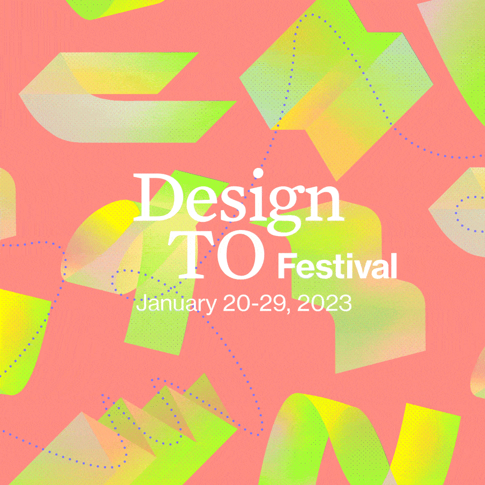

I had the utmost pleasure leading the creation, development, art direction, & design for DesignTO Festival 2023, an annual week-long celebration of art & design taking place across Toronto.
...
With this being the first time since 2020 that the DesignTO Festival would be primarily in-person, we at aftermodern.lab felt a responsibility to connect festival-goers with an experience centered around physical form. As such, my design process was driven by the goal of imbuing the Festival’s illustrations with feelings of journeyed paths & zeal. Bending & folding 3D forms were created in representation of both the myriad of creative works exhibited during the Festival as well as the walking paths patrons take through exhibits. These shapes emerge from layers upon layers of transparent gradient, tied together by a wandering dotted line that visualizes a patron’s journey exhibit-to-exhibit across Toronto.
With this being the first time since 2020 that the DesignTO Festival would be primarily in-person, we at aftermodern.lab felt a responsibility to connect festival-goers with an experience centered around physical form. As such, my design process was driven by the goal of imbuing the Festival’s illustrations with feelings of journeyed paths & zeal. Bending & folding 3D forms were created in representation of both the myriad of creative works exhibited during the Festival as well as the walking paths patrons take through exhibits. These shapes emerge from layers upon layers of transparent gradient, tied together by a wandering dotted line that visualizes a patron’s journey exhibit-to-exhibit across Toronto.

printed postcard

bus shelter ad — downtown TO (68.25" × 47.25")

social media gif

printed postcard details

initial ideation

deconstructed shape layers

interview screenshot

indigo design award (1 of 2)
With this being the first time since '20 that the Festival would be in-person, we at aftermodern.lab felt a responsibility to connect festival-goers with an experience centered around physical form. As such, my design process was driven by the goal of imbuing the Festival’s illustrations with feelings of journeyed paths & zeal.
Bending & folding 3D forms were created in representation of both the myriad of creative works exhibited during the Festival as well as the walking paths patrons take through exhibits. These shapes emerge from layers upon layers of transparent gradient, tied together by a wandering dotted line that visualizes a patron’s journey exhibit-to-exhibit across Toronto.